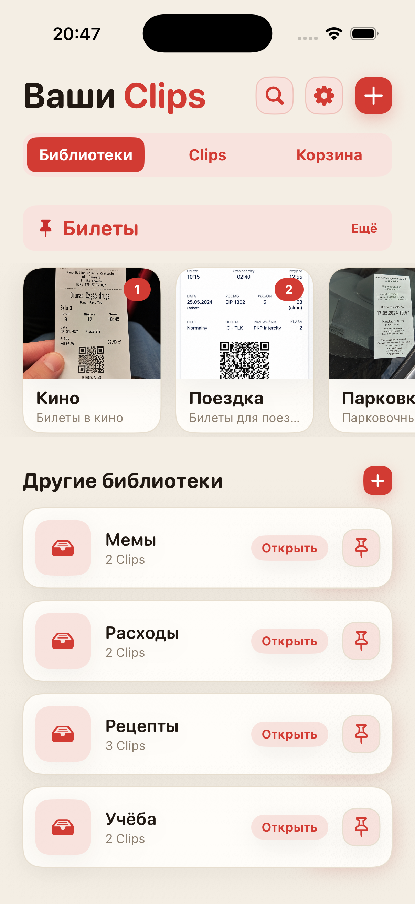
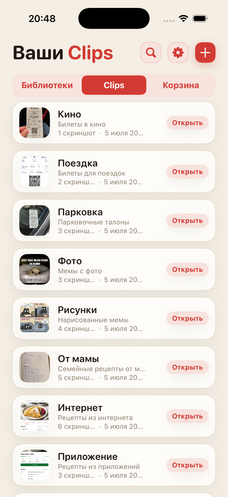
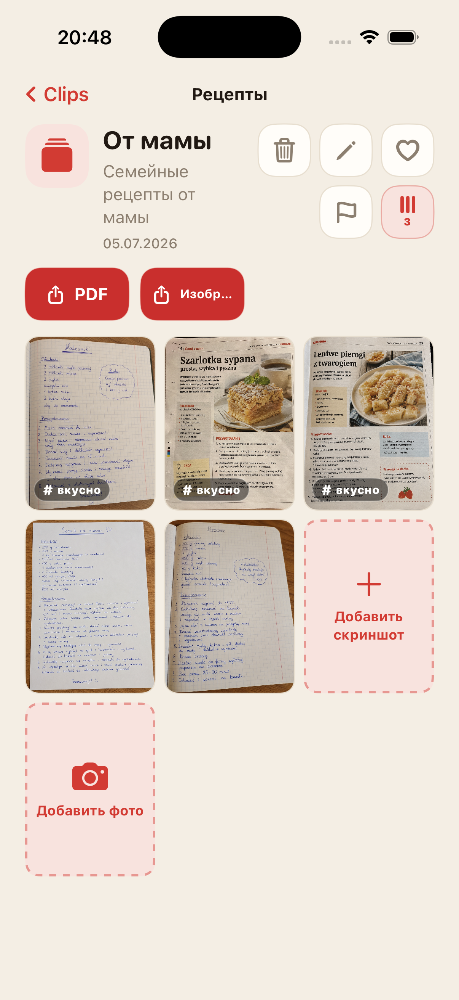
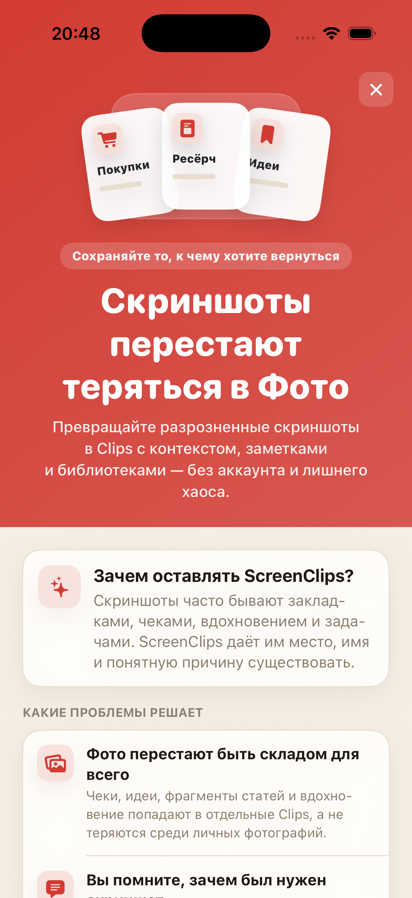

Скриншоты тонут в общей ленте
Вы сохраняете что-то важное, а через неделю листаете фотопленку так, будто ищете улику.
Превращайте разрозненные скриншоты в Клипы с названием, заметкой и собственной библиотекой. Без аккаунта, без облака и без бесконечных поисков в фотопленке.

Чеки, рецепты, билеты, идеи и фрагменты статей оказываются рядом с селфи, мемами и случайными снимками потолка. Мы построили облака, но все равно теряем скриншот с адресом отеля.
Вы сохраняете что-то важное, а через неделю листаете фотопленку так, будто ищете улику.
Одной картинки часто недостаточно. В ScreenClips можно добавить название и заметку.
Путешествия, работа, покупки и учеба заслуживают отдельных мест, а не одной бесконечной кучи в Фото.
Разделяйте темы: рецепты, чеки, билеты, исследования, учебу или все, что нужно не потерять.
Клип — это небольшая подборка вокруг одной вещи. У него есть название, описание и собственные скриншоты.
Откройте библиотеку, выберите Клип — и все нужное уже собрано вместе.

ScreenClips не пытается угадывать за вас. Он дает простую структуру: библиотека для темы, Клип для конкретной вещи, а внутри — скриншоты или фото.
Собирайте материалы в Клипы и дополняйте их по мере роста темы.
Превращайте Клип в удобный файл, если нужно отправить его или сохранить вне приложения.
Избранное, флажки и порядок там, где раньше была только бесконечная прокрутка.

ScreenClips работает локально. Для порядка не нужен аккаунт, и вам не нужно отдавать чеки, заметки и планы еще одному сервису, который очень хочет «улучшить опыт».
Premium не усложняет приложение. Он просто дает больше места для библиотек, Клипов и скриншотов. Цена указана в App Store.
Скачать вApp Store
Нет. Удаление элемента из Клипа не удаляет оригинал из Фото.
Да. ScreenClips создан как локальный органайзер на вашем iPhone.
Нет. ScreenClips не нужен аккаунт, чтобы упорядочивать ваши Клипы.
Да. Можно добавлять скриншоты и фото, если они относятся к Клипу.
ScreenClips упорядочивает то, что вы сохраняете «на потом». На этот раз это «потом» действительно можно найти.
Скачать вApp Store